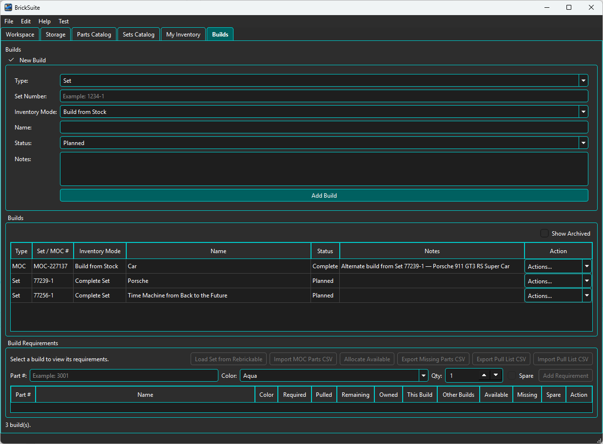
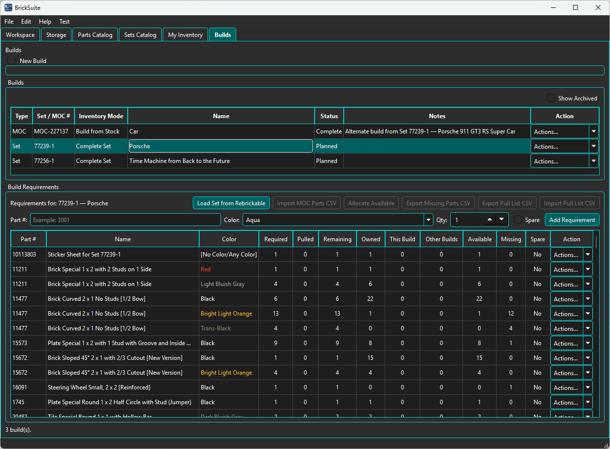
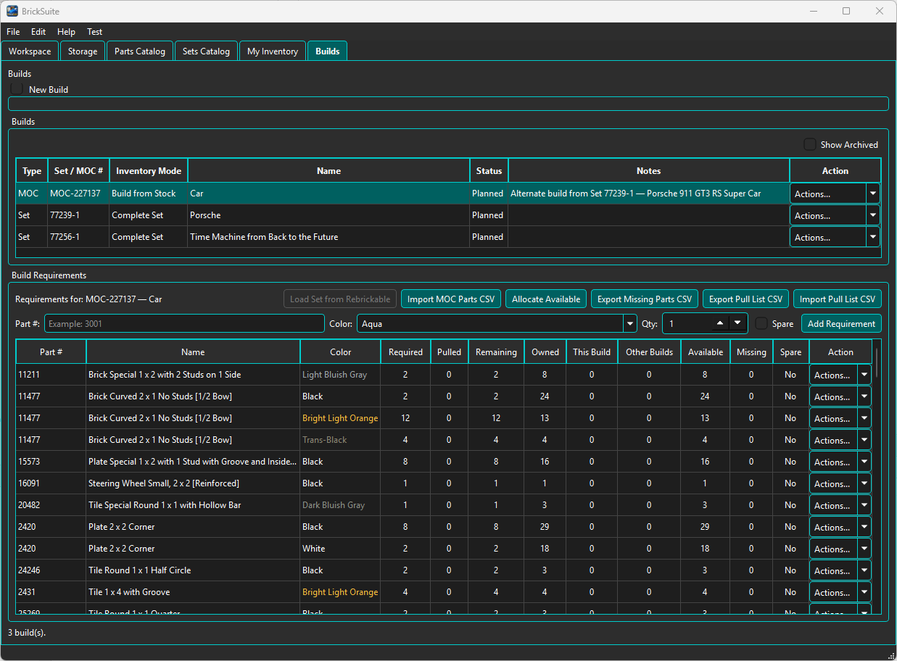
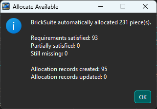
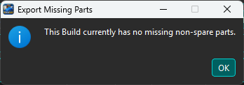
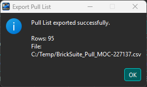
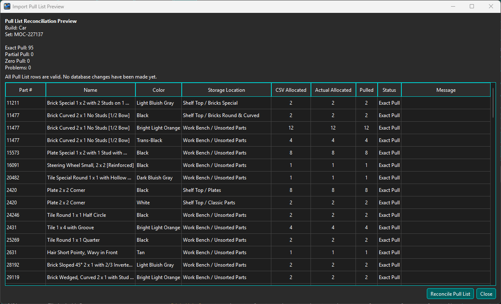
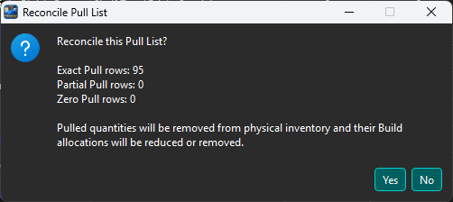
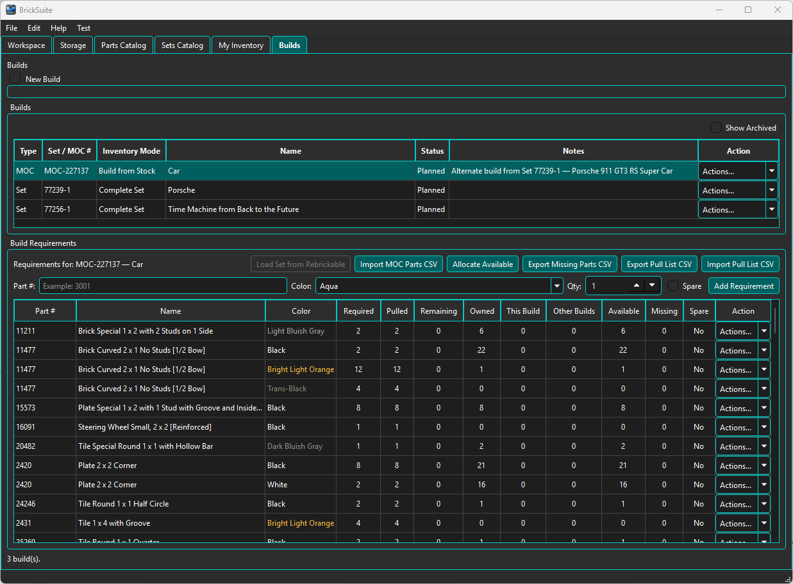
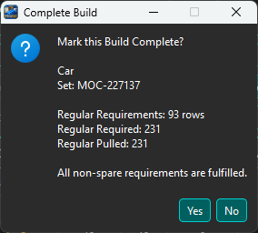

A Build is BrickSuite's working representation of a Set or MOC that you plan to assemble or manage. The catalog or MOC definition supplies the requirements; the Build records the working state as pieces are allocated, physically pulled, reconciled, and ultimately completed.
The Builds page is where BrickSuite connects digital requirements to your physical loose inventory.

The upper New Build area can create a Set or MOC Build. The Builds table lists existing projects with their type, Set or MOC number, Inventory Mode, name, status, notes, and Actions menu. Selecting a Build displays its requirements in the lower portion of the page.
The example contains a completed MOC Build named Car and two Planned Complete Set Builds, including 77239-1 — Porsche. The summary at the bottom reports three Builds.
Show Archived includes archived Builds in the list. BrickSuite remembers this setting between sessions.
A Set Build is based on a Set definition, while a MOC Build uses custom requirements. Both ultimately use the same Build Requirements model: each required part/color combination is compared with inventory and tracked through the Build lifecycle.
Set Builds can be created directly from the Sets Catalog. MOC requirements can be imported from CSV. See MOCs for the MOC-specific workflow.
The Build records an Inventory Mode. The screenshots in this guide show both Complete Set and Build from Stock Builds. The mode describes how the Build is being managed and determines the appropriate inventory workflow.
Selecting a Planned Build displays its requirements. For a Set Build, use Load Set from Rebrickable when the Set requirements need to be loaded.

Each requirement identifies the part and color and shows quantities that describe the current Build and inventory state. Important columns include:

This view is the central picture of Build readiness. It lets you see not only what the Build needs, but how those requirements relate to the inventory shared across the Workspace.
Allocate Available reserves available loose inventory for the selected Build. Allocation answers the question: Which pieces in my inventory are intended for this Build?

In the example, BrickSuite allocated 231 pieces. All 93 requirements were fully satisfied, with 0 partial requirements and 0 missing requirements.
See Allocate Available for the detailed allocation workflow.
If available inventory cannot satisfy every non-spare requirement, BrickSuite can identify and export the shortage. If nothing is missing, BrickSuite reports that directly.

In this example, the Build has no missing non-spare parts and is ready to proceed to physical pulling. See Missing Parts for shortage handling and export.
When inventory has been allocated and you are ready to retrieve the pieces from physical storage, choose Export Pull List CSV.

Save the CSV in a convenient working location. The pull list is the bridge between BrickSuite's digital allocation and the physical task of collecting the pieces.
Open the exported CSV in your preferred spreadsheet or CSV editor. Work through the list at the physical storage locations and enter the quantity you actually pulled in the CSV's Pulled field. Save the file when the physical pull is complete.
Recording the actual quantity matters. The exported allocation describes what BrickSuite expects to be available; the completed pull list records what you physically found and removed from storage.
Return to the Build and choose Import Pull List CSV. Select the CSV that now contains the actual Pulled quantities.

BrickSuite previews the reconciliation before changing inventory. In the example, all 95 rows are classified as Exact Pull, with 0 Partial Pull, 0 Zero Pull, and 0 Problems.
The preview compares the allocated quantity with the reported pulled quantity and classifies each row. This is the opportunity to review the physical results before committing them to the database.
When the preview is correct, choose Reconcile Pull List. BrickSuite displays a final confirmation describing the database changes that will occur.

Reconciliation records the pieces as physically pulled for the Build, removes the reconciled quantities from loose inventory as appropriate, and updates the Build requirements and allocations to reflect what actually happened.
Choose Yes only after verifying the preview and confirming that the CSV represents the physical pull.

After reconciliation, the Build Requirements table reflects the pulled pieces. The Pulled quantities are populated and the Build's working state now agrees with the pieces that were physically removed from loose storage.
This is the point at which the digital Build and the physical parts have been reconciled. The pieces can now be assembled with confidence that BrickSuite has recorded the pull.
When assembly is complete and the Build requirements are fulfilled, use the Build's Complete action. BrickSuite verifies the requirement state before asking for final confirmation.

The example confirmation for the Car Build shows 93 regular requirement rows, 231 regular pieces required, and all 231 pieces pulled. BrickSuite reports that all non-spare requirements are fulfilled before allowing the Build to be marked Complete.
Completion records the lifecycle state of the Build; it is not a substitute for allocation or pull reconciliation. Those steps establish how the physical inventory reached the completed Build.
Set Catalog or MOC
|
Planned
|
Load / Import Requirements
|
Allocate Available
|
+------------------+
| Missing pieces? |
+------------------+
| No | Yes
| |
| Export Missing Parts
| Acquire / Add Parts
| Allocate Again
| |
+-----------+
|
Export Pull List CSV
|
Physically Pull Pieces
|
Record Actual "Pulled"
Quantities in CSV
|
Import Pull List CSV
|
Review Reconciliation
(no DB changes yet)
|
Reconcile Pull List
|
Assemble the Build
|
Complete Build
BrickSuite deliberately separates allocation from physical pulling. A database can determine that a piece should be available, but only the person standing at the storage location can confirm that the piece was actually found and pulled.
The exported CSV provides a practical working list for that physical task. Importing the completed list lets BrickSuite reconcile its digital state with the real workshop. This is a core part of BrickSuite's digital-twin approach.
Builds can progress through additional lifecycle operations such as cancellation, disassembly, and archiving where supported by the current Build state. These operations preserve the relationship between the Build and inventory rather than treating the Build as an isolated list of parts.
Use Show Archived when you need to include archived Builds in the Builds table.
Sets Catalog | MOCs | Allocate Available | Missing Parts | My Inventory | Lost / Found